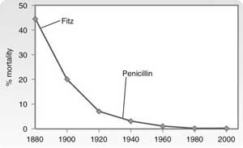
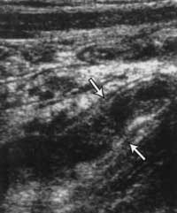

Appendicitis
INTRODUCTION
The most common surgical emergency.
Reginald Fitz accurately described and named the condition in 1886
and recommended surgical therapy.
Charles McBurney described the pain pattern location in 1889 and the
muscle splitting operation in 1894.
Murphy accurately described the whole clinical picture in 1905.
- mortality continued to reduce rapidly through the 20th century:

D I A B M I M
INCIDENCE
Lifetime incidence ~ 5%.
Sex
M=F until puberty.
2:1 M:F in teenagers.
Similar again after 25.
Age
Typically in 2nd/3rd decades, rarer in old.
More complications in old and very young (omentum less mobile).
Appendicitis is over-diagnosed in children.
Epidemiology
Incidence rose quickly in first half of Twentieth Century, but has
fallen since (unknown why).
Rising in countries adopting a Western-style diet.
D I A B M I M
AETIOLOGY
Gross Anatomy
See notes.
Pathogenesis
There is no unifying hypothesis.
- but initiating event obstructive
in most cases.
Lymphoid hypertrophy a
common cause.
Faecoliths (hard & dry
faecal material, baceria, debris, calcium) found in 40% of
uncomplicated appendicitis
- and in 65% of gangrenous, 90% of ruptures.
Ascarid worms can also
occlude the lumen.
Tumours (carcinoids) are
important in middle age.
And very rarely gallstones.
Idiopathic
Speculations diverse.
Bacteriology
A variety of anaerobes, aerobes implicated, as per normal colonic
flora.
Average of 10 organisms isolated from perforate specs.
- Bacteroides (anaerobic) and E. coli (aerobic) are universal.
- others aerobes: streps, pseudomonas, enterococcus
- other anaerobes: peptostreptococcus, bilophilia, lactobacillus,
fusobacterium.
So broad-spectrum antibiotics recommended.
D I A B M I M
BIOLOGICAL BEHAVIOUR
Pathophysiology
Obstructive
1. Mucinous secretion continues behind blockage, grossly dilating
appendix.
- as little as 0.5ml increases pressure to 60cmH20
- distension stimulates visceral afferent pain fibres, & may
stimulate peristalsis.
- reflex nausea and vomiting begin with such destention.
2. High pressure causes venous ischaemia.
- ulceration and oedema develop
- acute inflammation
- bacterial translocation into submucosa.
3. Necrosis and suppuration follow.
- ie gangrenous appendicitis
- perforation then becomes imminent.
Natural History
Depending on position of appendix, presentation may be subtle.
Sometimes attacks to resolve spontaneously with scarring, healing,
symptom subsidence but possible recurrence.
- impossible to know which pts will resolve.
Perforation is extremely uncommon in first 24-36 hours of symptoms.
Complications
After an acute appendicitis develops, it may:
1. Rupture
Risk factors:
- elderly / infants (omentum less mobile).
- immunosuppressed
- diabetics
- faecolith obstruction(!)
- pelvic appendix
- previous abdo surgery (omentum may be adherent so less
mobile).
2. Omentum Surrounds Appendix
Omentum surrounds appdx over days 2-3, walling it off.
- especially if ruptured.
- 95% of pts thus have spill confined to periappendiceal area.
--> causes a phlegmonous mass.
3. Peritonitis
When not contained or abscess bursts.
Two sites of prediliction are:
- pelvis cul-de-sac via gravity
- Right subhepatic space via the right gutter.
Causes diffuse spreading peritonitis & sepsis.
4. Fistulisation
Rare.
5. Other Complications
Rarely vein pyelophlebitis, portal vein thrombosis.
Liver abscess or bacteraemia (very rare now with antibiotic use).
- both deadly.
Natural History
Usually presents acutely as above.
Recurrent appendicitis
Chronic appendicitis does not exist; this is recurrent disease.
Intermittent obstructions of the lumen and spontaneous remission
likely.
Patients undergoing appendicectomy for chronic lower abdo pain often
show abnormal histology
Fecolith on XR, Ba enema defect or examination appropriately will
lead to appendicectomy.
- 92% of such appendixes can show histologic abnormalities
- 95% of these patients in one series were absolutely cured.
'Appendiceal colic' occurs in children, with intermittent
obstruction without inflammation.
- history longer than one month
- three or more recurrent RIF pain attacks
- localised tenderness in RIF without peritonism.
- +/- Ba enema evidence of poor filling / nonemptying
- 88.5% of such children experienced relief following
appendicectomy.
D I A B M I M
MANIFESTATIONS
Symptoms
Prodrome
Freqently a period of indigestion, 'gastritis' or flatulence prio to
pain (Cope).
Classical Description
Main feature is poorly localised colicy abdo pain.
- often epigastric then peri-umbilical at first (visceral referred).
- similar to, but often less intense than small bowel colic, cramps
may be intermittent.
- 'downward urge' common, such that passing wind/motion might
alleviate pain.
Anorexia, nausea, usually one or two vomits (75%), following onset
of pain.
A history of unusual irregularity of bowels often obtained.
- 1-2 loose BMs common (visceral pain).
- also may get obstipation prior to pain.
With progression, pain localises to RIF over 1-12 hours (us. 4-6),
at McBurney's Pt.
- becomes, constant, intense and localised.
- due to transmural inflammation and irritation of peritoneum
locally.
Note the sequence
>95% have anorexia, then pain, +/- vomiting
- if nausea precedes pain, question diagnosis further.
- the presence of hunger should make the diagnosis suspect.
Variant Pain
50% do not have variant pain.
- pain may be prominently either somatic or visceral, and poorly
localised.
- in the elderly localisation to the RIF is unusual.
Variance is often related to the site of the appendix.
- eg pelvic appendix may cause suprapubic discomfort, tenesmus,
diarrhoea, dysuria and frequency.
- tenderness only revealed on PR.
- eg retrocaecal: cramping right loin pain.
- eg superficial: more local pain.
- eg long: RUQ pain or even LIF pain if mobile caecum.
- eg malrotation - caecum may be almost anywhere.
- rarely may cause referred testicular pain.
Infants - suspect anyone with vomiting, diarrhoea, fever, pain.
Elderly - less pain and tenderness, hence be wary of diagnostic
delay.
Systemic
Fever & tachycardia uncommon for first six hours.
- later slight pyrexia (usually <38o), with HR 80-90.
- 20% of cases show no pyrexia or tachycardia in early stages.
Temp >38.5 in kids suggests another diagnosis or perforation.
Rigors not typical, more common with biliary or renal.
Temp will climb higher if perforation occurs and deterioration
ensues.
Complications
Abscess
- may settle with time then recur.
Peritonitis
- 4% get a little better then worse.
- mostly pts quickly get very unwell as with all peritonitis.
Fistulae - uncommon
Signs
Thorough abdo exam is the cornerstone of diagnosis.
Observe
Unwell patient.
Pt walks with difficulty, may lie still with thighs drawn up.
May be splinting abdo during respiration, move gingerly.
Pointing sign: pt points to where pain began, where it moved
to.
Palpate
Local tenderness is suggestive.
- not at early stages of attack, however.
- McBurney Pt is 1 and a half - 2 inches toward umbilicus from ASIS.
Rigidity
- muscle guarding and rebound (coughing or percussion).
- it is common to find no rigidity, and this a frequent cause of
delay to operation (Cope)
Rosving's sign:
- LIF palpation --> pain in RIF.
- useful but not specific.
Psoas sign: extend R hip with pt on L side
- appendix may be lying on psoas muscle.
Obturator sign:
- flexion & internal rotation of hip causes hypogastric pain.
Rectal exam:
- not actually routine
- pain if pelvic appendix, may feel a mass.
Mass
- ?omentum abscess
- ?distension.
Cutaneous hypersthesia
- over T10-12 - rub with fingers --> pain.
Caecal distension
- local reflex adynamic ileus
- more likely with an imbedded retrocaecal appendix.
Auscultate
Decreased sounds around area, possible absence if perf.
Follow-up by examining 4 hrs later improves sensitivity.
Special
Features
Clinical Syndromes
Obstructive Appendix
Abrupt onset and progression.
Generalised abdo pain from start possible.
Temp may be normal, vomiting common.
Urgent intervention.
Non-obstructive
Less acute.
Retrocaecal Appendix
Rigidity and palpation tenderness often absent (silent appendix
- distended caecum prevents pressure on inflamed mass).
Deep palpation often present in the loin, and psoas spasm and
quadratus lumborum spasm may be present.
Hyper-extend the hip = psoas sign.
Internally rotate the hip = obturator sign.
Pelvic Appendix
Early diarrhoea or frequency occasionally first manifestation.
Absence of abdo rigidity and McBurney Pt tenderness if intrapelvic.
Do a rectal - tender in rectovesical pouch or pouch of Douglas, esp
on Right.
Psoas and obturator spasm may be present.
Postileal
Rare, but can be missed - least easy to diagnose.
Tenderness is ill-defined, though may be just to right of umbilicus.
Infants
Rare under 36months
Morbidity high due to missed diagnoses and lack of omentum
involvement.
Rupture rate high - 50-85%.
Children
Usually vomit. Completely averse to food.
Often do not sleep.
Bowel sounds may be completely absent early.
Do worse - rupture rate 15-50%
Elderly
Perforation more common at >30%.
May show little evidence due to lax abdominal wall & symptoms
generally milder.
- may seem like a SBO.
--> higher mortality - account for >50% of appendix deaths
despite being uncommon.
Fever and WCC may also be deceptively absent late.
Obese
Diminishes all local signs.
Consider a midline abdo incision due to diagnostic delay and
technical difficulty.
Pregnancy
Frequency 0.1%; risk same as non-pregnant females.
Often delayed diagnosis because symptoms put down to pregnancy.
- caecum also displaced laterally in 3rd trimester, localising pain
cephalad or lateral, also contributing to delay.
USS is preferred modality.
Fetal loss is now uncommon <5%, but up to 20% if perforation
- early laparoscopy encouraged; beware the third trimester(!) when
fetal loss rates high and late exploration common.
- fetal loss from this is minimal
- laparoscopic approach may be used without added morbidity up to
~24wks.
- thereafter trochar puncture of uterus and poor visualization are
problematic.
Differential Diagnoses
Accuracy of pre-op diagnosis usually 85%.
- typically taught both less or more (eg by 5-10%) should cause
concern.
- Can increase >90%, and maintain perf rate of ~25% with
intensive observation of uncertain cases.
- most errors of diagnosis occur in young women, those at extremes
of age, and when presenting at a more advanced stage (Hill).
Most common findings in non-appendicitis (accounts for >75%; in
order):
- mesenteric adenitis
- no pathology found
- acute PID
- twisted cyst / rupture follicle
- acture gastro
Children
Gastroenteritis
No localising features usually.
Intestinal colic as well as much D+V.
Contacts often affected.
WCC us normal.
Hospital admission and careful observation may be warranted if
concerned.
Laparoscopy or surgical exploration in cases.
In salmonella pain may be intense, localised with rebound.
Typhoid possible, though now rare.
Mesenteric adenitis
Usually current or recent uRTI
Generalised lymphadenopathy possible.
Colicky pain, pain free between attacks (last minutes).
Shifting tenderness is convincing evidence when present.
Usually pain is more diffuse.
Vol. guarding possible, rigidity rare.
Lab little help
- relative lymphocytosis suggestive.
Explore if some diagnostic doubt, else observe for several hours.
Meckel's Diverticulitis
Pain similar but central or left-sided.
Antecedent abdo pain or anaemia.
Not important if indistinguished - similar treatment
Intusseception
Important to distinguish - treatment differs.
Age is suggestive: median age 18 months vs rare for appendicitis
<2 yrs.
Infant well between colicky pain attacks.
A mass may be palpable in RLQ, later perhaps empty.
Henoch Schonlein Purpura
Preceded by sore throat or resp infection.
Abdo pain can be severe.
Nearly always a typical rash, sparing face.
Lobar pneumonia
Especially at the R) base.
Abdo tenderness is minimal.
Fever is marked, chest exam and XR diagnostic.
Adults
Terminal Ileitis
Typical Crohn's, also Yersinia
enterocolitica.
Can be indistinguishable.
Antecedent history of cramps, weight loss, diarrhoea and infrequency
of anorexia favour enteritis, but not exclusively.
Doughy mass may be felt.
In an appreciable no of Crohn's sufferers, diagnosis was made at
appendicectomy.
Ureteric Colic
Usually different character of pain.
Perform urinalysis in all cases.
If RBCs, do supine AXR.
Renal USS diagnostic.
Epiploic Appendagitis
An appendage may infarct due to torsion.
Pain shift unusual, pt not ill or anorexic.
Rebound without rigidity.
In 25% pain may persist until appendage removed.
Pyelonephritis
Often urinary symptoms, but may cause confusion, esp in females.
Tendernes in loin and high fever suggestive.
Pyuria helpful.
(or just uti).
Perforated Peptic Ulceration
Duodenal contents pass along paracolic gutter to RIF.
Very sudden onset pain, starts in epigastrium then passes down RIF.
Rigidity usually more widespread.
Free air.
Testicular Torsion
Examine scrotum in all cases
Pain can refer to RIF.
Acute Pancreatitis
Consider and exclude by amylase.
Rectus sheath haematoma
Relatively rare, but easily missed.
Acute pain localised to RIF after strenuous exercise.
Or after minimal trauma in anticoagulated elderly.
Localised pain w/out GI upset.
Adult Females
Pelvic disease is biggest mimic in women of child-bearing age.
Negative appemdicectomy rates as high as 32-45%.
Pelvic Inflammatory Disease
Biggest differential.
Pain typically lower and bilateral.
Discharge, dysmennorrhoea, dysuria helpful.
STD contact or history.
- contact gynae.
- ?cervical excitation.
- high swab for Chlamydia.
- laparoscopy if uncertain.
Mittelschmerz
Midcycle follicular cyst rupture with bleeding.
Systemic upset is rare.
Symptoms subside within hours.
Sometimes bad enough to warrant laparoscopic investigation.
Ovarian cyst
Can be difficult differential.
Pelvic ultrasound and gynae opinion should be sought.
If encountered at operation, remove the cyst in women of
child-bearing age.
Visualise contralateral ovary and document it for medicolegal
reasons.
Ectopic pregnancy
Right sided tubal abortion or unruptured tubal pregancy can confuse.
Similar but pain commences on right side and stays there severe and
unabating.
Ruptured ectopic with haemoperitoneum usually recognisable.
Missed period, pregnancy test positive.
- 90% have an abnormal menstrual history (Hill).
Pain on cervical palpation on PV.
USS should be performed if suspicious.
Elderly
Diverticulitis
Sigmoid loo, if long, can lie to right of midline.
Differentiation is impossible.
Trial of conservative management with IV fluids and antibiotics is
often appropriate.
Low threshold for exploratory laparotomy.
Intestinal obstruction
Usually obvious
Subtlety lies is picking appendicitis as the cause.
As with diverticulitis, IV fluids, antibiotics and NG decompression
with early resort to laparotomy.
Carcinoma of caecum
If obstructed or locally perforated.
Antecedent history helpful, as is a mass on exam.
Other rare differentials
Perihepatitis.
Tabetic crises.
Spinal conditions.
Porphyria, diabetes mellitus.
Typhlitis.
Clostridial septicaemia.
D I A B M I M
INVESTIGATIONS
Laparoscopy = good diagnostic test.
- essentially a clinical diagnosis with low threshold for surgery.
Haematology
Do in every case.
WCC usually moderate (12-18) if uncomplicated
- Only 4% of those with appendicitis will have leukocytosis <10.5
CRP likewise correlates but even less-specific.
- if both normal, question diagnosis but do not rule it out.
- if >18 or large left shift, suspect perforation or greater
inflammatory diagnosis.
Biochem
Check urea and electrolytes in dehydrated / elderly pts with
comorbidities.
Note 1/3 may have pyuria so don't rule out appendicitis on that
basis
Imaging
USS
Sensitivity ~85%, spec ~80%
- useful in women to exclude gynae pathology.
- or to diagnosis an appendiceal mass.
- shown to reduce unnecessary op rate to 7% in experienced hands
- but delays operation so increased complications.
USS Criteria (any of)
- non-compressible appendix of 7mm or greater in AP diameter
- thick wall >2mm
- appendicolith
- interruption of continuity of echogenic submucosa
- peiappendiceal fluid or mass.
- gas-filled caecum and retrocaecal appendix responsible for false
-ves.
- and perforation decreases sensitivity also.
- highly operator dependent.

CT
Use for atypical presentations and older patients e.g. >50y
Sensitivity probably ~95%, specificity ~95%
- positive predictive value 80-90%
- IV/oral contrast
- key features are pericaecal inflammation, mesenteric fat
stranding, thick wall >2mm, target-sign, free fluid.
- note incidental appendicoliths are common in general population
(Sabiston).
- air in the appendix wall without other signs virtually eliminates
appendicitis as a diagnosis.
AXR
If wanting to exclude bowel obstruction, ureteric colic or
intussusception.
- ie not routine.
- often shows a distended SB loop or two.
- if faecolith seen, highly diagnostic and a gangrenous appendix
more likely.
- only 1-2% of perf'd appdxs cause pneumoperitoneum (Satiston), so
if free air, question the diagnosis carefully.
Urinalysis
Do in every case.
Exclude UTI.
- nb if appendix on bladder, may have whites, even rbcs but not
infection.
ϐHCG
Pregnancy test in every woman of childbearing age.
Other
Tc 99m-labelled WBC scan
- not proven superior to above tests
- merit of use in diagnostically challenging patients unknown.
Note on Accurate Diagnosis
These factors reduce negative appendicectomy (Sabiston):
- experienced clinical examiner
- prudent USS / CT
- high index of suspicion in low-risk populaitons
- observation in those with equivocal findings
Diagnostic Laparoscopy
Women of child bearing age & the obese.
Vastly superior exploration of abdomen possible.
MANAGEMENT
Operative
Conservative antibiotic regimens are inappropriate unless you're a
submariner.
- RCT: antibiotics vs surgery showed 85% initial success with ABs
but recurrence 35% with short follow-up.
1. Appendicitis
Remove early after short period of intensive pre-op preparation.
- if there are equivocal signs and symptoms, trust repeated
examination as the mainstay; keeps negative laparotomy rate lower.
Its getting late - now or in the
morning?
"The view is accepted by most surgeons of experience that every
patient with acute appendicitis should be operated on within the
first twenty-four hours from onset" (Cope)
Deferring appendicectomy after midnight to first case following
morning does not increase morbidity.
Be judiciously prompt if likely obstructed / fecolith.
If perforated then get on with it.
Worried about making females infertile by waiting?
Large trial from Scandinavia = good evidence that no risk of
infertility (Hill).
Do I need to give Antibiotics?
Single peri-op antibiotic reduces SSIs superficial and deep.
- prospective multicenter trial evidence
- showed less wound infections but no change in intra-abdominal
collection rate
- used cefoxitin 2g.
Commonly cef + met often started preop & continued if peritoneal
contamination
- go for 3-5 days, clinical condition permitting.
There is no evidence concerning the guide antibiotics depending
on severity; evidence only available for periop dose.
- often 1 day gangrenous, 3-5 day perf, but no evidence for such.
Open or laparascopic?
No right answer except in women of child bearing age.
Cochrane Review:
Lap: higher cost, possibly longer, lower wound infection rate (50%),
higher intra-abdo infection rate (50%), reduced hospital stay by 1
day, return to work 3 days earlier.
Do I need to take a routine pus swab?
No. Save your lab some work.
- flora is well known, its the same as for shit.
- not available for days and unlikely to change outcome, hardly ever
even checked.
Yes if persisting infection or SSI only.
I have found a normal appendix at
open appendicectomy.
There is a low probability of an occult appendicitis.
Methodic search for other causes.
- terminal ileum and ascending colon for IBD
- examine mesentry for nodes (take 2 if enlarged: one culture, one
histo)
- run the small bowel in retrograde fashion for Meckel's.
- ?peritoneal fluid / exudate.
- examine pelvic organs.
- examine gall bladder & gastroduodenum.
- omentum for infarction / torsion
- occasionally sigmoid diverticulitis may be noted.
- etc etc.
Sometimes may need a new incision to treat the pathology found.
Remove appendix; it may be the cause and they have an appendicectomy
scar now.
- there are vague reports about an increased risk of crohn's disease
following appendicectomy.
I found Crohn's disease, do I
still remove the appendix?
No right answer.
There is a theoretical risk of fistula, but that is extremely rare.
Does prevent future diagnostic confusion.
I don't.
Should I remove an incidental
Meckel's
No (Sabiston)
- unless they have had symptoms, are young, it has a narrow neck, or
looks inflamed.
I have found a normal appendix at
laparoscopy, do I remove it?
Controversial as to whether a normal appendix should be removed.
I do if no other path found as there is a low rate of microscopic
appendicitis not evident macroscopically.
Should I invert the stump?
No. Don't do it lap so why do it open?
Increased chance of intramural abscess of caecum if inverted.
What is an acceptable rate of -ve
appendicectomy?
- 20% should not be viewed as gold standard any more so aim for less
than that.
- 10-15% possible without unacceptable perforation rate.
- will be higher in women than men.
2. Perforated Appendicitis
Operate.
Should I close the wound?
Yes.
Interrupted sutures may be advisable if you did it open.
Should I use a drain?
No.
Should I irrigate?
No evidence for this.
Most do.
Possibly better to suck and not irrigate. Macrophages are not very
good at swimming if you leave wash behind.
3. Appendix mass
The patient has a RIF
mass
2-5% of appendicitis patients present with a mass.
Image it: ?abscess or other.
The patient has an abscess.
Preferred management is the 'Oschner-Sherren' regimen:
- surgery can disseminate a localised process
- is dangerous in presence of inflamed bowel (can result in
fistulae)
- or require more extensive procedures such as caecectomy.
Undertake percutaneous drainage, under USS/CT guidance.
- and broad-spectrum IV ABs.
Numerous studies have documented the safety and efficacy of
this regimen(Sabiston).
Discharge patient when symptom-free.
- interval appendicectomy then performed at 4-6 weeks.
My patient is not improving on
that regimen.
Be prepared to operate if:
- rising pulse rate or sepsis.
- increasing or spreading abdominal pain / peritonitis suspected.
- vomiting or copious gastric aspirate.
Can't I just operate on a mass
anyway?
Modern approach is not to. Safer.
Possibly acceptable morbidity though, if the surgeon is well
trained.
Interval appendicectomy?
These patients are at risk of further inflammation, though rate is
<20%.
My practice is to do an interval appendicectomy.
This may change in future as some recent evidence suggests it may
not be necessary.
Colonoscopy?
Yes, send older patients for colonoscopy to rule out underlying
pathology prior to interval surgery.
Post op Complications
One report showed 3% of unruptured appendicitis have complications
- vs 47% of ruptured ones.
Wound infection
<5% in non-perforated appendicitis.
Pain and erythema of wound 4th-5th day.
Often soon after discharge.
--> Drain wound and antibiotics for Gram negatives and
anaerobics.
Intra-abdo Abscess
Relatively rare now with selective antibiotic use.
Spiking fever, malaise, anorexia 5-7 days post-op.
Paracolic, pelvic and subphrenic sites.
Abdo USS and CT facilitate diagnosis
--> percutaneous drainage.
--> consider laparotomy in pts with suspected sepsis without
radiology signs, particularly if continuing ileus.
Bowel obstruction
Up to 1% probably, mostly presenting in first 6mo post-op.
Infertility
No risk with nonperforated appendicitis
Conflicting evidence (none vs several-fold risk) with perforated
disease.
Sufficiently low that an expectant plan can be taken.
Ileus
A period of adynamic ileus is expected, can last for days after
gangrenous app. removal.
High risk pts for abscess development.
If >4-5 days, and fever, indicative of intra-abdo sepsis,
investigate as above.
Miscellaneous
Other usual suspects to small extent.
Incidental Appendicectomy
I'm in the abdomen anyway, can't
I just take out the appendix in case it causes mischief later?
Unnecessary unless there is an indication.
Most pts with a laparotomy are older, so risk reduction for
appendicitis is poor.
In young patients (10-30) it may actually be cost effective, but
don't do it.
- will you be protected if there is a complication?
- and a prospective trial has shown the benefit to be tiny at
best.
D I A B M I M
References
Cameron 10th.
Hill J. Surgical Emergencies.
Schwartz.
Sabiston 17th
Malt. Practice of surgery.
Cope.